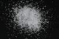

|
|
(For further information on spectroscopy, see:
http://speclab.cr.usgs.gov)
TITLE: Celestite HS251 Barite DESCRIPT
DOCUMENTATION_FORMAT: MINERAL
SAMPLE_ID: HS251
MINERAL_TYPE: Sulfate
MINERAL: Celestite (Barite group)
FORMULA: SrSO4
FORMULA_HTML: SrSO4
COLLECTION_LOCALITY: Mexico
ORIGINAL_DONOR: Hunt and Salisbury Collection
CURRENT_SAMPLE_LOCATION: USGS Denver Spectroscopy Laboratory
ULTIMATE_SAMPLE_LOCATION: USGS Denver Spectroscopy Laboratory
SAMPLE_DESCRIPTION:
Sample originally described in:
Hunt, G.R., Salisbury, J.W., and Lenhoff, C.J., 1971, Visible and Near-Infrared spectra of minerals and rocks: IV. Sulphide's and Sulphate's: Modern Geology, V. 3, p 1-14.
IMAGE_OF_SAMPLE:

END_SAMPLE_DESCRIPTION.
XRD_ANALYSIS:
40 kV - 30 mA, 6.5-9.5 keV
Reference: JCPDS #5-593; Huebner's reference pattern.
Found: Celestite.
Sought but not found: quartz - the strong (100) reflection is not
present.
Comment: Reflections match the JCPDS card well. However, the
reflections are broad rather than sharp, somewhat like
my reference pattern (synthetic SrSO4)."
J.S. Huebner, J. Pickrell, and T. Schaefer, 1994, written communication.
END_XRD_ANALYSIS.
COMPOSITIONAL_ANALYSIS_TYPE: None # XRF, EM(WDS), ICP(Trace), WChem
COMPOSITION_TRACE: None
COMPOSITION_DISCUSSION:
None
END_COMPOSITION_DISCUSSION.
MICROSCOPIC_EXAMINATION:
END_MICROSCOPIC_EXAMINATION.
SPECTROSCOPIC_DISCUSSION:
END_SPECTROSCOPIC_DISCUSSION.
SPECTRAL_PURITY: 1b2b3b4b # 1= 0.2-3, 2= 1.5-6, 3= 6-25, 4= 20-150 microns
| LIB_SPECTRA_HED: | where | Wave Range | Av_Rs_Pwr | Comment |
|---|---|---|---|---|
| LIB_SPECTRA: | splib04a r 862 | 0.2-3.0µm | 200 | g.s.= |
| LIB_SPECTRA: | splib05a r 1578 | 0.2-3.0µm | 200 | g.s.= |
| LIB_SPECTRA: | splib06a r 4392 | g.s.= | ||
| LIB_SPECTRA: | splib06a r 4404 | g.s.= |
{kind=link}